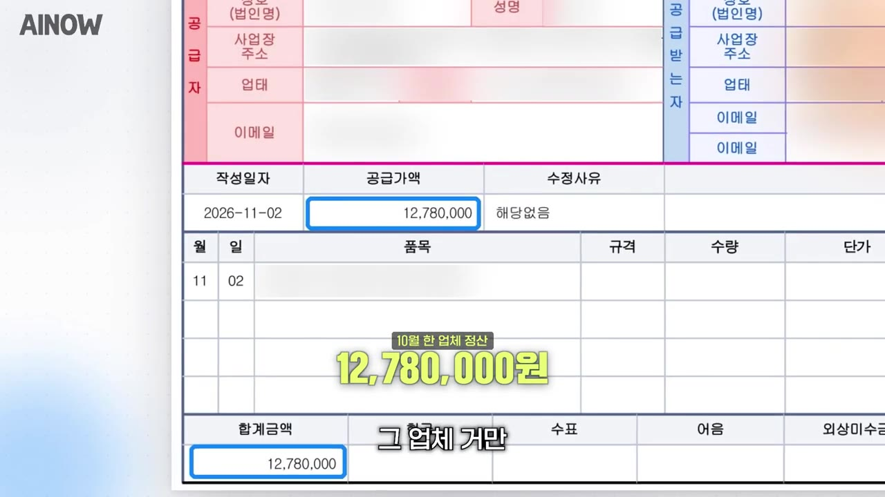
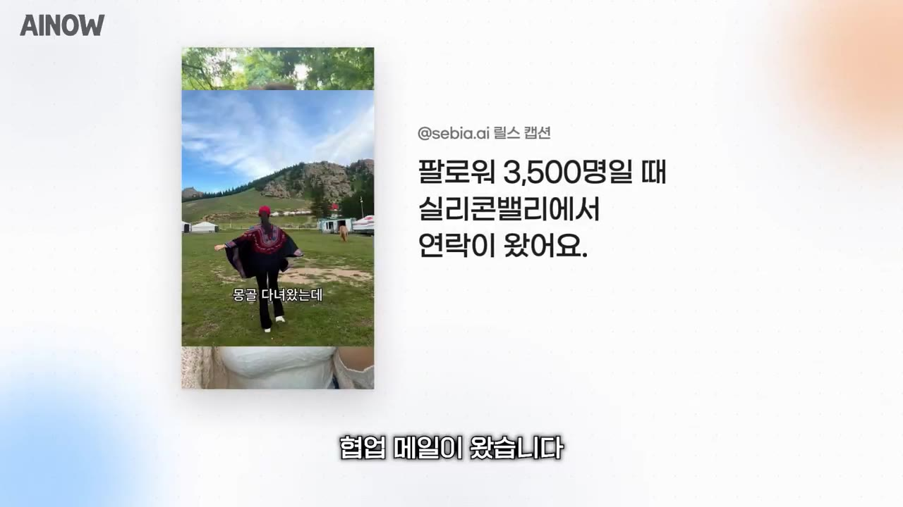
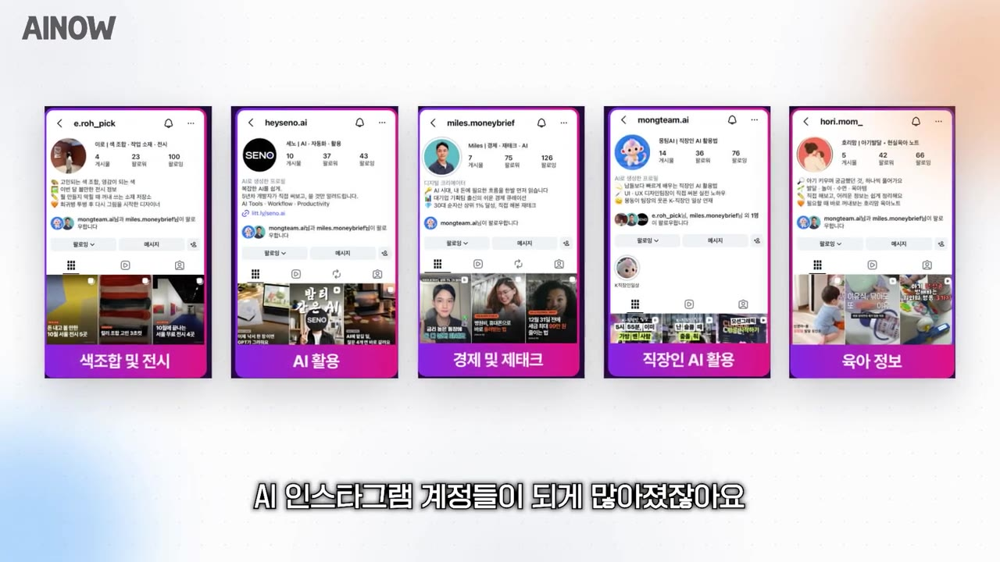
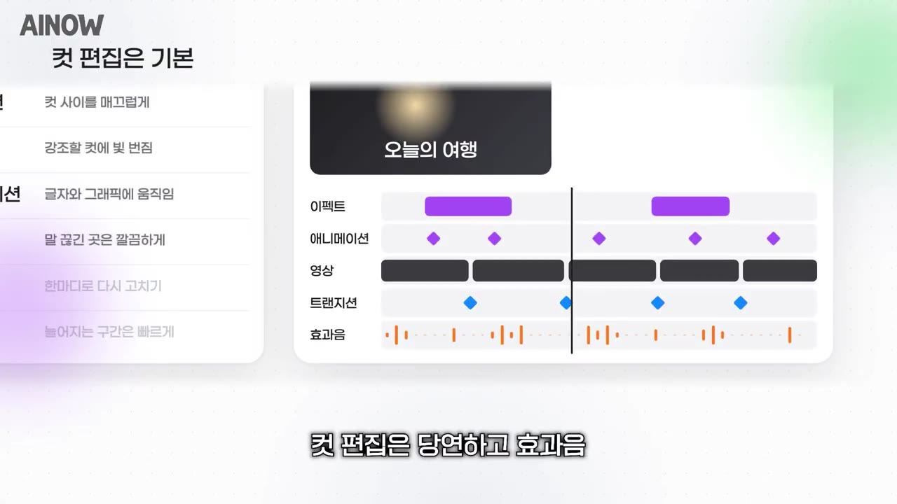

한눈에 보기
- 증권사 트레이딩 3년 뒤 쉬던 직장인(세비아님)이 AI 인스타 릴스로 시작해, 첫 게시 약 2주 만에 첫 광고 제안(35만 원)을 받았다.
- 지금은 광고 제안이 하루 5~10건 들어오고, 한 업체 정산이 940만 원(진행자는 1,200만 원대)일 만큼 AI 크리에이터 광고 수익이 커졌다. 최고 월 수입은 약 11,000달러(1,400~1,500만 원)라고 한다.
- 성장 비결은 특별한 트릭이 아니라 초반 두 달 동안 1일 1콘텐츠, 즉 양으로 밀어붙여 어느 하나가 터지길 기다리는 것이다.
- 영상 편집은 클로드로 약 98% 자동화했고, 효과음·트랜지션·자막·컷 편집까지 설명만 하면 된다고 한다.
- AI 크리에이터는 AI를 삶처럼 쓰는 사람에게 맞고, 얼굴 노출은 신뢰와 성장 면에서 하는 쪽을 권하지만 안 해도 성공 사례는 있다.
이런 분께 도움이 됩니다
- AI로 인스타그램 릴스·콘텐츠 크리에이터를 시작하려는 직장인·이직 준비자.
- 첫 협업 제안, 얼굴 노출, 계정 정지, 편집 자동화 등 초반 고민의 실제 경험담을 듣고 싶은 분.
핵심 내용
결론: 광고 수익은 투입 대비 효율이 높다고 말한다
- 출연자들은 여러 수입원(강의·컨설팅·SI 대행 등) 중 크리에이터 광고 수익이 인풋 대비 아웃풋이 가장 좋다고 본다. (0:16)
- 릴스 한 편 단가는 "100만 원 넘는다"고 했고, 시급 1만 원 기준 100시간 분량이라고 계산했다.
- 이미 평소 하던 일(콘텐츠 만들기)이라 기획·촬영·편집에 드는 자원이 적고, 편집은 대부분 자동화되어 있다.
- 광고 제안 규모는 하루 5~10건이고, 10건 중 1건 정도만 협업한다. (1:43)
- 한 출연자는 한 업체의 지난달 세금계산서가 1,200만 원대, 다른 출연자는 한 업체 정산이 940만 원이라고 공개했다. (3:13)

- 최고 월 수입은 약 11,000달러(약 1,400~1,500만 원)이며, 본인은 "못 쳐내는 광고가 많아서 많지 않다고 느낀다"고 했다.
- 광고가 몰리는 이유: AI 서비스 기업이 늘면서, 화장품 회사가 뷰티 크리에이터에게 제품을 주듯 AI 회사도 AI 크리에이터에게 광고를 준다는 설명이다. TV 대신 SNS로 광고가 옮겨 갔다.
💡 AI 서비스 기업이 늘면서 AI 크리에이터가 새로운 광고 채널이 되고 있다.
- 한꺼번에 많이 받으면 계정이 망가질 수 있어 비슷한 주제는 간격을 두고 받아야 한다.
- 일을 줄이고 싶을 때 줄이기 쉽다. 광고가 2~3주 단위로 움직여 크루즈처럼 천천히 방향이 바뀐다.
- 모든 수치는 출연자 본인 말이며 사람마다 결과가 다르다.
시작 배경과 초기 타임라인
- 세비아님은 증권사 트레이딩을 약 3년 하다 적성이 안 맞아 쉬었고, 콘텐츠 제작은 처음이었다. (4:06)
- 첫 게시물은 1월 1일쯤, 첫 릴스는 1월 2일, 첫 터진 릴스는 1월 4일(조회수 약 14만). (25:51)
- 1월 15일 실리콘밸리 G사 광고 에이전시에서 첫 메일이 왔다. 보수는 35만 원, 당시 팔로워 약 3,500명. (15:18)

- 휴가 중이라 답장 방법과 단가를 몰라 3일간 답장을 못 했다. 강의에서 양식을 공유했어도 막상 닥치면 기억이 안 났다고 한다.
- 이후 같은 루프로 계속 수익화가 이어졌다.
- 영상이 말하는 시기(작년/올해)가 자막 상 엇갈린다. (자막상 불분명)
🔁 세비아님의 초기 타임라인
- 트레이딩 퇴사
- 첫 게시물
- 첫 바이럴
- 첫 협업 메일
- 월 최대 수익
- 1트레이딩 퇴사
증권사 약 3년 근무 후 휴식
- 2첫 게시물
1월 1일쯤 인스타 시작, 1월 2일 첫 릴스
- 3첫 바이럴
1월 4일 릴스 약 14만 조회
- 4첫 협업 메일
1월 15일 G사 에이전시, 35만 원
- 5월 최대 수익
월 약 11,000달러
계정 급성장과 정지
- 인스타를 시작한 지 한 달 만에 3만 3천 명, 두 달째 4만 명까지 올랐다. 당시엔 AI 콘텐츠가 드물어 프롬프트만 좋아도 크게 터졌다. (8:54)
- 6시간 만에 조회수 200만을 찍은 게시물도 있었으나 삭제당했고, 위반이 누적되어 계정이 약 1.5~2개월 정지되었다.
- 가만히 있기 싫어 두 번째 계정(캐러셀 중심)을 만들었고, 첫 계정 정지가 풀려 지금은 두 계정을 운영한다.
- 이 대목은 시점·삭제 이유가 자막상 불분명하다. 정지 사유는 구체적으로 말하지 않았다.
AI 크리에이터에 적합한 사람
- AI에 관심이 없으면 하기 어렵다. AI와 말 그대로 함께 살아야 하는 직업이기 때문이다. (12:02)
- 화장품에 관심 없이 화장품 크리에이터가 되겠다는 것과 비슷하다고 비유했다.
- 시간을 들여 AI 도구를 써 보고 만드는 게 즐거운 사람에게는 이만한 직업이 없다고 추천한다.
- AI는 업종마다 쓰는 방식이 달라 다양한 크리에이터가 나올 수 있다. (7:29)
- 특별한 재능은 필요 없다는 입장이다. 고양이 사진이 촬영 이력의 전부였던 수강생도 잘하고 있다고 한다. (5:43)
- 어려움에는 뾰족한 답이 없고, 툴을 직접 눌러 보고 AI 답변을 꼼꼼히 읽어 문제를 찾고 다시 해 보는 것뿐이라고 한다.
- 세비아님은 2023년부터 GPT·클로드·제미나이를 비교해 쓰며 관심을 쌓았다.
얼굴 노출 논쟁
| 구분 | 노출 | 비노출 |
|---|---|---|
| 의견 | 신뢰도가 다르고 성장이 상대적으로 빠르다 (눈대중, 데이터는 아님) | 작년보다 성공 사례가 많아져 가능 |
| 근거 | 사람이 운영한다는 낙수 효과 | 비노출 남성 수강생 계정이 블랙핑크 소속사 협업 제안 |
- 세비아님은 "괜찮으면 얼굴 노출을 권한다"는 입장이다. (13:08)
- 외모 걱정에는 "사람들은 생각보다 외모를 신경 쓰지 않고 캡컷 보정이 잘 된다"고 답했다.
- 반대 사례로 얼굴을 한 번도 안 보인 수강생이 핑크톤 귀여운 디자인으로 신곡 AI 콘텐츠 협업 제안을 받았다. (20:20)

클로드로 영상 편집 자동화
- 작년에는 캡컷으로 자막 타이핑·컷 편집을 수작업했지만 지금은 클로드가 컷 편집, 효과음, 트랜지션, 이펙트, 애니메이션, 배속, 수정까지 해 준다. (22:08)
- 이제는 편집을 몰라도 설명만 하면 되고, 세비아님은 약 98%를 클로드에 맡기고 마지막에 2%만 직접 본다.
- 유튜브처럼 긴 영상도 자기 전에 걸어 두면 아침에 편집이 끝나 있다는 사례가 나온다. (23:53)
- 단, 도메인 지식(캡컷 등 편집 지식)이 있으면 AI를 더 똑똑하게 쓸 수 있다. 손으로 먼저 해 보는 게 중요하지만 AI로 더 빨리 갈 수 있다.
💡 AI는 편집을 대신해도, 편집 지식이 있는 사람이 더 잘 시킨다.
- AI 활용 역량이 쌓이면 다른 영역에도 적용할 "무기"가 생긴다.

성장 노하우: 1일 1콘텐츠
따라 해보기
준비물
- 인스타그램 계정, 영상 편집 툴(캡컷), AI 도구(클로드 등). 비용·소요 시간은 영상에 안 나옴.
단계별 방법
🔁 초반 계정 키우기 순서
- 주제 정하기
- 1일 1콘텐츠
- AI로 기획
- 편집 자동화
- 협업 대응
따라 할 수 있는지 점검
- ✅ 바로 따라 할 수 있음: 1일 1콘텐츠로 두 달 올리기, 얼굴 노출 여부 결정, 마지막 2%는 직접 확인.
- ⚠️ 4단계 「편집 자동화」: 클로드로 편집하는 구체적 방법(어떤 도구·연동·프롬프트)이 영상에 안 나온다 → 영상 24:17 이후 예고된 2부, 또는 설명란 링크 강의 참고.
- ⚠️ 5단계 「협업 대응」: 답장 양식과 단가 기준이 영상에 없다 → 유료·무료 강의에서 공유한 양식으로 보이며, 강의 확인 필요.
- ⚠️ 1단계 「주제 정하기」: 어떤 주제가 잘 먹히는지 구체적 기준이 없다 → (보충) 본인 업무와 관련된 AI 활용 팁부터 시작.
- ❓ 시기(작년 1월/올해 1월), 정지 이유가 엇갈리거나 불분명해 확인이 필요하다.
기억할 숫자·인용
- 첫 협업: 35만 원, 팔로워 약 3,500명
- 최고 월 수입: 약 11,000달러(약 1,400~1,500만 원)
- 릴스 한 편 단가: 100만 원 이상
- 광고 제안: 하루 5~10건, 실제 협업은 약 10건 중 1건
- 성장 속도: 한 달 3만 3천 명, 두 달 4만 명, 6시간 만에 조회수 200만
- 편집 자동화율: 약 98%
- "트릭이라는 건 없고 그냥 하던 대로 계속 해야 되지 않을까."
생각해볼 점
- 출연자 두 사람은 AI 교육 강의로 수익을 내는 입장이라, 수익 사례가 홍보 성격을 띨 수 있다. 결과는 사람마다 다르다고 영상도 밝힌다.
- 얼굴 노출이 성장에 유리하다는 주장은 "눈대중"이며 데이터가 없다.
- 계정 정지 사유·광고 표시 규정 등 위험 요소는 깊이 다뤄지지 않았다.
바로 해볼 일
- 오늘부터 AI 활용법 하나로 릴스 1개 기획해 올리기
- 얼굴 노출 여부와 계정 콘셉트 정하기
- 클로드로 쉬운 편집(자막·컷) 한 가지 맡겨 보기